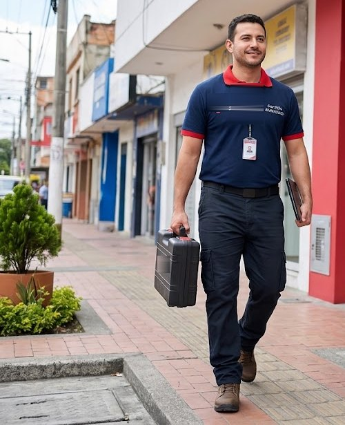

Reparación de neveras LG en La Chorrera
Servicio técnico LG a domicilio en La Chorrera para neveras: diagnóstico en el sitio, costo claro antes de reparar y garantía en la pieza y la mano de obra.

Técnico de neveras LG en La Chorrera
Aquí hay muchas casas y residenciales con lavandería o terraza. Revisamos también las condiciones del lugar donde está el equipo: ventilación, humedad, tomacorrientes y desagües.
En casas, las variaciones de voltaje y la humedad de las áreas externas son causas frecuentes de fallas; te recomendamos protegerlos y te explicamos cómo.
Dispensador de agua y fábrica de hielo LG
El dispensador puede fallar por filtro de agua vencido, manguera congelada o válvula de entrada de agua. También atendemos la fábrica de hielo que no produce o produce poco. En La Chorrera revisamos el sistema de agua completo y te explicamos qué pieza hay que cambiar.
Servicio técnico de neveras y refrigeradoras LG en La Chorrera
Si tu nevera LG dejó de enfriar, hace ruido, forma escarcha o el dispensador de agua no funciona, nuestro técnico de refrigeradoras LG va a tu casa en La Chorrera para revisarla. Atendemos neveras LG French Door, Door-in-Door, InstaView, Side by Side, de congelador superior e inferior, con o sin dispensador de agua y hielo.
Fallas de neveras LG que atendemos en La Chorrera
- La nevera no enfría: Falla del ventilador del evaporador, escarcha que tapa la circulación de aire, sensor de temperatura, tarjeta de control o compresor.
- El congelador se llena de escarcha: Falla del sistema de descongelación (resistencia, termostato de deshielo o tarjeta), o empaque de la puerta que no sella.
- Gotea agua dentro de la nevera: Desagüe de descongelación tapado o congelado, o bandeja de drenaje en mal estado.
- Hace ruido o zumbido fuerte: Ventilador con hielo o desgastado, compresor que arranca con dificultad, o la nevera mal nivelada.
- El dispensador no saca agua: Filtro de agua vencido, manguera congelada o válvula de entrada de agua.
Consejo de mantenimiento
No sobrecargues la nevera: el aire debe circular entre los alimentos.
Preguntas frecuentes en La Chorrera
¿Reparan neveras LG en La Chorrera?
Sí. Damos servicio técnico a domicilio de neveras LG en La Chorrera (Panamá Oeste). Escríbenos por WhatsApp con el modelo y la falla y te confirmamos la visita.
¿Cuánto tardan en llegar a La Chorrera?
Coordinamos visitas en 24 a 48 horas en la mayoría de las zonas, según disponibilidad.
¿Cuánto cuesta el servicio técnico de la nevera LG en La Chorrera?
Te confirmamos el costo de la visita antes de ir y el de la reparación antes de empezar, según la falla y el modelo.
Guías de neveras LG
Otros equipos LG en La Chorrera
Neveras LG en zonas cercanas
Búsquedas relacionadas en La Chorrera
¿Tu nevera LG falla en La Chorrera?
Escríbenos por WhatsApp con el equipo, el modelo y la falla. Te confirmamos disponibilidad para tu zona en minutos.